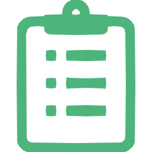

ガルヒ鍼灸院
よくある質問

保険診療について
Q. 訪問はりきゅうマッサージってどんなことするの？
A. お年寄りやお身体の不自由な方、通院が困難な方が医師の同意を得て受けられるサービスです。
主に疼痛や筋肉の緊張の緩和、関節可動域の拡大及び維持、むくみの緩和、精神的安静、血行の促進、身体機能低下の予防を目指していきます。
患者様の年齢や体力に応じて、はりきゅうマッサージの施術を行っていき、ADL（日常生活動作）を維持、改善していき、QOL（生活の質）の向上に繋げていきます。
Q. どんな施術者が訪問するのですか？
A. 「はり師」「きゅう師」「あん摩マッサージ指圧師」の国家資格を取得した施術者が訪問いたします。女性のスタッフも在籍しているため、女性を希望する方はお伝えください。
Q. 施設の中でもサービスを利用できますか？
A. 特別養護老人ホーム、グループホーム、有料老人ホームなどでも訪問して施術を行うことは制度上可能です。入所されている施設と相談の上、訪問の可否、訪問時間などを調整いたします。
Q. 主治医に書いてもらう「同意書」はどうすればいいですか？
A. 主治医(かかりつけ医)が患者様の傷病名・施術部位などを記載する、保険請求を行う上で必要な書類です。有効期限は同意をいただいた日付から6カ月間で、その後継続される場合は再同意の手続きが必要です。 こちらの同意書の手続きは当院で全てサポートいたします。
Q. 介護保険に影響はありますか？
A. 介護保険への影響はありません。介護保険の限度額に達している方でも、医療保険を使用しますので、問題なくご利用いただけます。
Q. 無料施術体験って？
A. 無料施術体験は、初回の保険診療対象の方限定で実際の施術を体験いただいております。どのような施術をしているかはもちろんですが、施術を担当するスタッフがどんな方なのかという不安や疑問が少しでも解消できればと考えています。
現在のお身体の悩みや、これまでのお怪我、病気のこと、通院、服薬状況などをお伺いさせていただき、患者様のお身体に合った施術をさせていただきます。
※訪問時に鍼灸マッサージの適応外と判断した場合は、直ちに病院への受診を勧めます。
自費施術について（保険適用外）
Q. 準備するものはありますか?
A. タオルのご用意をお願いします。また、お部屋でリラックスできる服装にてお寛ぎになってお待ちくださいませ。 なお、施術ベッドなどは当店で持ち込みは行っておりませんので、お客様のベッドやマット の上での施術となります。
Q. 施術用ベッドなどの持ち込みはしてくれますか？
A. 当店では施術用ベッドの持ち込みは行っておらず、お客様お持ちのベッドやマットの上で施術を行います。全身横になれる場所をご準備の上、お待ちくださいませ。
Q. どこまでが出張エリアですか？
A. 出張可能エリアは東京都内のこちらのエリアとなります。ご参照ください。ファッションホテルやカプセルホテルへの出張はご案内できかねます。
Q. ホテルの出張も可能ですか？
A. ビジネスホテル、オフィスへも出張を承っております。あらかじめホテル名と住所をお調べの上、お電話ください。なお、外部者の入室に厳しいホテルもありますので、その場合には 承りかねる可能性がありますのであらかじめご了承くださいませ。
Q. ・出張費はかかりますか？
A. 交通費のかかる地域、またエリア外の地域もございます。詳しくは、コース・料金 の出張可能エリアをご参照くださいませ。
Q. 料金はいつ支払えばいいですか？
A. 簡単なカウンセリング終了後の前金制となっております。
Q. クレジットカードは利用可能ですか？
A. VISA、MasterCard、AmericanExpress、DINERS、JCB のクレジットカードでご利用いただけます。なお、手数料は追加でいただいておりません。
Q. 保険適用は可能ですか？
A. 可能ですが、保険施術を受けていただくには条件がございます。お一人で通院できない方が 対象となります。こちらのページをご確認ください。
Q. 初めての利用でも、担当指名はできますか？
A. ご希望に合う担当をご指名いただけます。 容姿や年齢でのご指名・ご質問はトラブル防止の観点からご案内致しかねますので、あらかじめご了承くださいませ。
Q. 予約してからどれくらいの時間で来てもらえますか？
A. 約 20 分～30 分でお伺いしておりますが、予約状況や交通状況などにより、お時間が前後する事がございます。日にちやお時間がお決まりであれば、事前予約をしていただきますとスムーズに対応できます。
Q. 施術前にシャワーは入ったほうがいいですか？
A. 施術者が訪問する前にシャワー又は、お風呂にゆっくりと入っていただくことをおすすめいたします。お風呂に入って体が温まると、筋肉がゆるみ、血流の流れが良くなります。 そのため、施術の効果がアップします。
Q. ソファなどでも施術可能ですか？
A. 全身横になっていただけるスペースにて施術させていただけるよう、お願いしております。対応不可の場合には承りかねる場合もございますのであらかじめご了承くださいませ。
Q. ぎっくり腰や寝違えなど痛みの強い場合も施術してもらえますか？
A. ぎっくり腰や寝違えの場合には基本的には患部が炎症を起こしています。そのような場合には、痛みの緩和を図るための施術を行わせていただきますのでご相談ください。
Q. 妊娠中でもマッサージは受けられますか？
A. はい。安定期(妊娠 16 週以降)に入られた妊婦様には当店用意の「ご妊娠の際の施術同意書」にご同意の上、マタニティ対応可能なスタッフがお伺いし施術させていただけます。お身体への負担を軽減するために抱き枕、あるいは枕やクッションなどを多めに用意していただけると横向きの施術の際などに体勢を楽にすることができます。まずはご相談くださいませ。 またご妊娠初期~安定期前の妊婦様のご利用はお控えいただいております。安定期に入られた際にお問合せいただけたら幸いです。
Q. 施術ができない場合はありますか？
A. 当店では以下に該当するお客様のご利用はご遠慮願いますので予めご了承ください。
- 泥酔状態 ・ 大麻、シンナー、薬物等の使用
- 暴力団関係者、それに準ずる者
- 風俗的なサービスを要求する行為
- 施術する場所、環境が不衛生な場合
- スカウトおよび同業者 ・ セラピストへの接触行為
- 電話番号やメールアドレスを聞く行為
- セラピストが不快に感じる行為（言動やしぐさ）
- その他、当店がふさわしくないと認めた場合
禁止事項を守れないお客様に関しましては、途中で施術を中断することもございます。 その際、料金のご返還には応じかねますので、重々ご理解のうえ、ご利用頂けますよう、宜しくお願い致します。 再三の注意にも関わらず、ご理解頂けないお客様に関しましては、警察に通報させていただくこともございますので、その旨ご理解ください。
Q. 急な予定が入ったためキャンセルしたい。キャンセル料はかかりますか？
A. 当店のキャンセルポリシーは以下の通りとなります。
■キャンセルポリシー
ご予約後やむを得ずキャンセルさせる場合には、お早めにお電話にてご連絡ください。
■キャンセル料金
以下のキャンセルは、キャンセル料を請求させていただきます。
ご予約スタート 1 時間以内のキャンセル：コース料金の 50％
スタッフ到着後のキャンセル：コース料金の 100％
■免責事項 予約日の天災・災害による当日キャンセルの場合、キャンセル料は請求致しません。
Q. 施術途中でお手洗いに行きたくなってしまった、お子様が泣きはじめてしまった、など中断した場合にはその分施術時間は長くやってもらえるのでしょうか？
A. 施術者は、お客様のご住所にご予約の時間分、滞在する時間を確保しております。その後に移動予定や施術予定があることも多く、お客様都合での施術時間の変更を承りかねますので、あらかじめご了承下さいませ。
Q. セラピストはどんな人ですか？
A. こちらのページに訪問スタッフについて詳しく記載しておりますのでご確認ください。